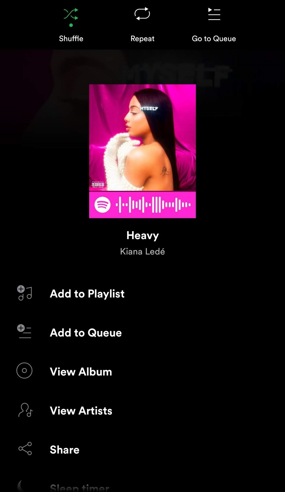
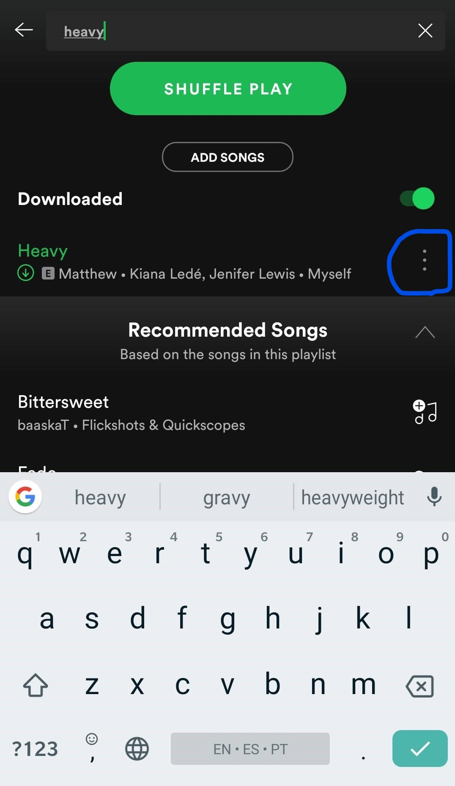
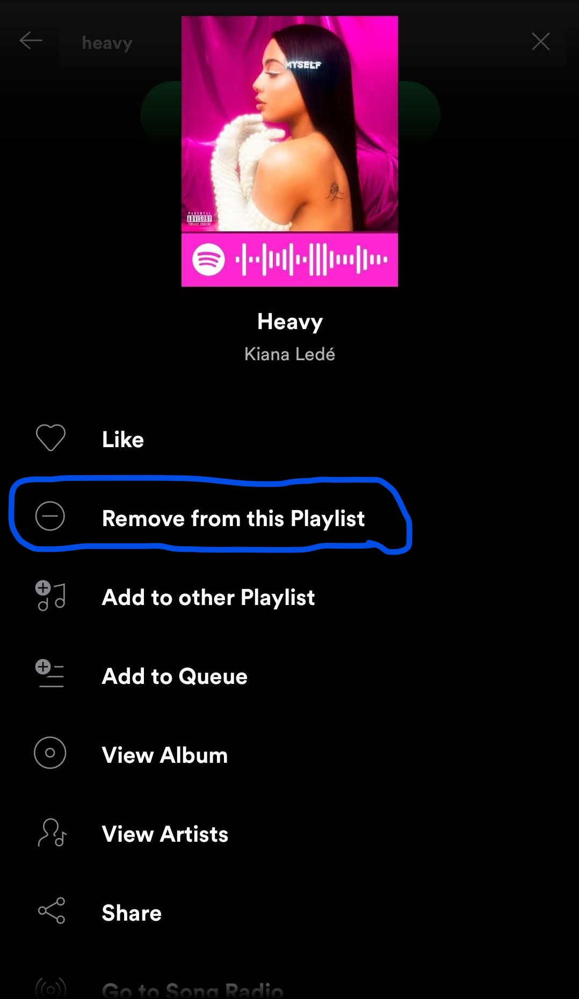

Usability Case Study
-
Figure 1
-
Figure 2
 -
Figure 3
 -
Figure 4

The product I am reviewing is the mobile version of Spotify. Spotify is a music streaming service that allows individuals to pay for subscriptions to access a large pool of music. I use Spotify daily to listen to music, discover new artists, and make playlists where I separate the music into different moods or genres. A major design flaw on the mobile app is the song deletion process. Let’s say you come across a song that you no longer like, and you want to remove it from your playlist. You click on the song settings which is the three-dotted tab in the top right corner. Upon opening the settings there is no option to remove the song that is playing from the current playlist.